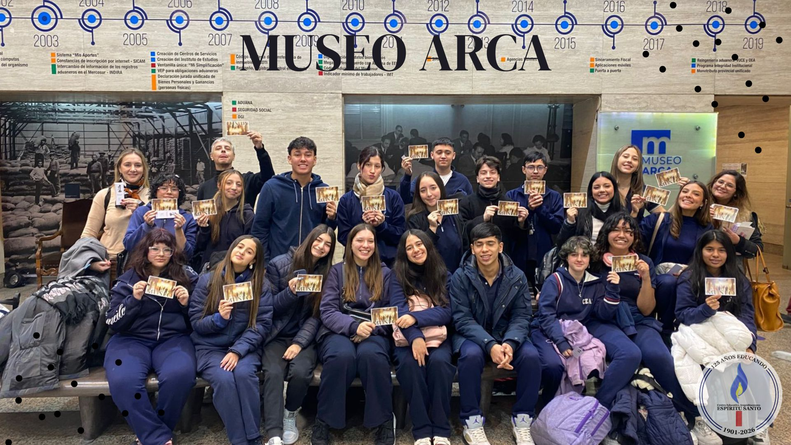

Visita al museo de ARCA
Por: Tiziano Nicolás González Caffarello

Participaron los alumnos de 4.º A
El pasado 22 de mayo, siendo las diez y veinte de la mañana, los alumnos de 4.º A se juntaron frente a la entrada de la Agencia de Recaudación de Control Aduanero para visitar el museo que recorre la historia de este organismo público. A propósito de aprender más sobre la logística impositiva y los protocolos fronterizos de comercio, la docente de la asignatura involucrada, Marina Samaniego, encabezó la organización del evento en compañía de la directora de estudios del nivel secundario, Yanina Rumacho.
Como no todos los estudiantes se habían presentado todavía, a la espera de los restantes, Samaniego les explicó mientras tanto lo que verían y descubrirían dentro de la muestra.
Tras pasar el bello portón dorado de la entrada, el grupo fue encaminado por los guías hacia el pequeño pero curioso museo que se guardaba en un rincón que es probable ignorar a primera vista. Allí empezó una experiencia muy enriquecedora de la que se llevaron varios aprendizajes.
El guía comenzó a presentar oralmente el origen de la actual institución y su formación histórica, además de hablar sobre el funcionamiento del sistema tributario y destacar nuestra importancia como contribuyentes financieros de los principales servicios públicos. Al mismo tiempo, demostró la esencia de los impuestos dentro de las antiguas comunidades urbanas y su capacidad inherente de sostener la economía interna de los países.
En la fase posterior, otro guía expuso nuestro lugar dentro del comercio internacional y el rol de Argentina como un país agroexportador que provee a continentes enteros con sus materias primas. Resaltó la importancia de desarrollar una industria autosuficiente, para asegurar el crecimiento económico de la república y así prometer un protagonismo sobre la plataforma mundial del mercado. En paralelo, fue enseñado con un video el control aduanero de nuestras fronteras. Se mostró cómo las autoridades intervenían las mercancías que eran importadas y detectaban aquellas que violaban los códigos generales de la aduana.
Finalmente, el último guía acompañante los dirigió hacia una sala maravillosa: estaba llena de mobiliario antiguo y documentaciones credenciales. Muchos de ellos, que aún funcionaban, bien de mecanismo electrónico o analógico, supieron demostrar la operatoria bancaria de algunas décadas atrás. Mientras el guía explicaba la configuración de los objetos, invitaba a los alumnos para que pudieran interactuar con los mismos y recrear la actividad que realizaban los trabajadores en el pasado. Mediante este planteo, se aprovechó para recalcar la reivindicación de las garantías, reservas y derechos laborales.
Saliendo de esa galería escondida, antes de concluir con la excursión, decidieron pasar por la sala de Malvinas. La ya dicha mostraba ciertas vidrieras que traslucían elementos de los militares participantes y recortes periodísticos de la época. En otros escaparates colgaban conjuntos completos de la vestimenta que nuestros soldados usaron.
Esta visita, hecha su finalización hacia las doce del mediodía, sirvió como una herramienta de la que el alumnado se valdrá para completar la currícula orrespondiente a Sistemas de Información Contable (SIC). La expedición fue un medio útil para que ellos aprendieran sobre el papel del Estado en la sociedad, los diferentes tipos de impuestos, la Argentina como exportadora alimenticia, los controles fronterizos nacionales y las adjudicaciones legales de los trabajadores en ejercicio.
Leer otras notas
Acto en conmemoración del 25 de Mayo
Obra de Teatro El Globo -Los Árboles mueren de pie
Publicidad